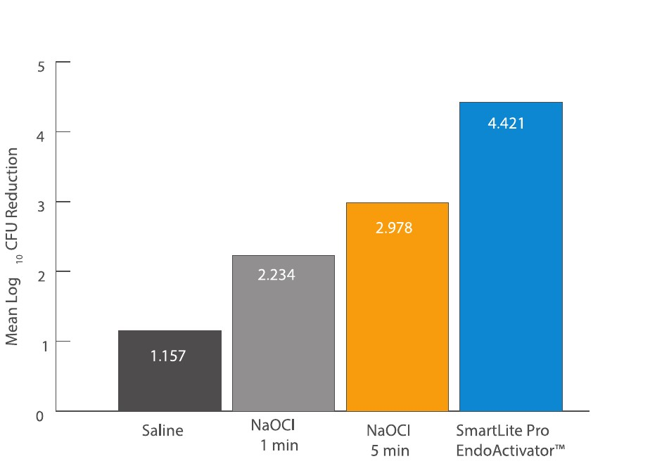
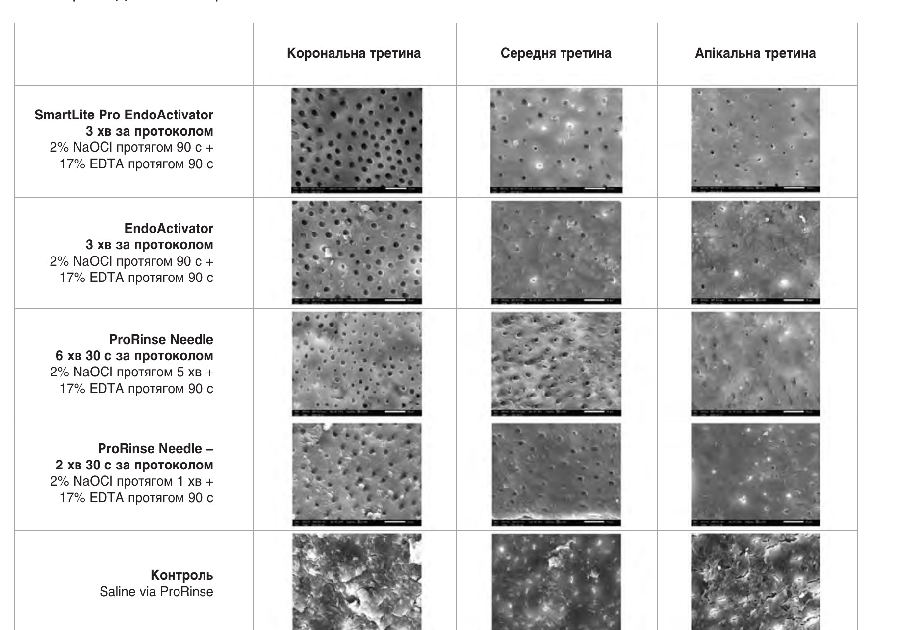

Матеріали Дентсплай Сірона · журнал «ДентАрт» 2024 №3
SmartLite Pro EndoActivator™. Ендодонтична система активації
SMARTLITE PRO ENDOACTIVATOR™ ENDODONTIC ACTIVATION SYSTEM
Успішна ендодонтична терапія вимагає формування, очищення та обтурації кореневого каналу.1 Іригація (також називається «очищення») є одним із ключових етапів, оскільки вона спрямована на розчинення і видалення тканини пульпи, дентинних ошурків, змазаного шару, мікроорганізмів та їх побічних продуктів з кореневого каналу.2 Крім того, 35 або й більше відсотків поверхні каналу залишаються необробленими після механічних інструментів, в основному через анатомічну складність системи кореневого каналу, і це знову підкреслює важливість іригації, яка є єдиним способом впливу на ці важкодоступні місця.3
Гіпохлорит натрію (NaOCl) – основний іригаційний розчин, який використовується для знищення мікроорганізмів і розчинення некротичних тканин у концентрації від 0,5 % до 6 %. Етилендіамінтетраоцтова кислота (EDTA) (17 % або 15 % розчин) також зазвичай використовується завдяки її хелатним властивостям та здатності видалення змазаного шару.4 Загальновідомо, що процес доставки є таким же важливим, як і антибактеріальні характеристики іригантів.
У рамках цього опитування, зокрема понад 1100 ендодонтів у США, підтверджено, що майже половина опитуваних використовують ті чи інші форми доповнення для етапу іригації, при цьому 48 % застосовують ультразвукову активацію, 34 % – звукову активацію, 10 % – систему негативного тиску. Ці результати підкреслюють бажання багатьох практиків покращити ефективність очищення, використовуючи засоби, відмінні від класичної голкової іригації, для приведення іригаційних засобів у контакт зі стінками кореневого каналу.5 Ендодонтична система активації SmartLite Pro EndoActivator™ входить до цієї категорії.
Ендодонтична система активації SmartLite Pro EndoActivator™ (рис. 1) заснована на технології EndoActivator® та тривалій історії її клінічного використання. Система пропонує численні технічні і клінічні поліпшення, такі як дві швидкості звукової частоти (діапазон 18 000 циклів на хвилину (cpm) і 3000 обертів за хвилину) та еліптичний рух, щоб активувати іригаційний розчин (рис. 1). Ця насадка має новий переріз у формі паралелограма і доступна в трьох розмірах: малий (жовтий, 15/02, довжина 22 мм), середній (червоний, 25/04, довжина 22 мм) і довгий (червоний, 25/04, довжина 28 мм). З точки зору ергономіки, насадка SmartLite Pro EndoActivator™ тонша і має можливість обертання на 360° для покращення доступу до всіх зубів.

Дані in vitro6
Зменшення кількості внутрішньоканальних мікроорганізмів у видалених зубах людини було більш ніж у 25 разів вищим при використанні SmartLite Pro EndoActivator™ порівняно із замочуванням на 5 хв у 2 % NaOCl. Також зменшення кількості бактерій було у 150 разів вищим при використанні SmartLite Pro EndoActivator™ порівняно із ручною іригацією за допомогою голки ProRinse протягом 1 хв у 2 % NaOCl (див. графік нижче).
Що ж до видалення змазаного шару, то канали видалених зубів були значно чистішими після використання SmartLite Pro EndoActivator™ протягом 90 секунд і в поєднанні з 17 % EDTA. У порівнянні з усіма іншими методами оцінені середні значення, як показано на зображеннях SEM нижче.


Клінічний досвід
Було проведено дослідження за участю 27 стоматологів, які лікували понад 550 пацієнтів у своїй щоденній практиці з ендодонтичною системою активації SmartLite Pro EndoActivator™.7 Вони дотримувалися інструкції виробника, тобто гідродинамічне перемішування внутрішньоканальних розчинів робилося протягом 30–60 секунд. 88 % учасників сприйняли SmartLite Pro EndoActivator™ як пристрій преміум-класу, що працює краще, ніж його попередник. Клінічні фактори та конструктивні особливості, такі як більш потужне та покращене перемішування, ергономіка і звукові коливання кожні 30 секунд, були визначені як ключові переваги. Крім того, 75 % стоматологів погодилися, що доступ до всіх ділянок ротової порожнини та зубів є легким, і 92 % з них були впевнені, що кореневі канали можна ретельно очистити за одне відвідування за допомогою SmartLite Pro EndoActivator™.
Висновки
Ендодонтична система активації SmartLite Pro EndoActivator™ може стати вашим вибором для забезпечення ретельного очищення кореневих каналів завдяки новому механізму руху, кращій ергономіці та ефективнішому видаленню змазаного шару порівняно з попередником. Протокол іригації SmartLite Pro EndoActivator™ забезпечує значніше зменшення кількості бактерій порівняно з протестованими протоколами ручної іригації.
Література
- European Society of Endodontology. Quality guidelines for endodontic treatment: consensus report of the European Society of Endodontology. Int Endod J, 2006. 39(12): p. 921–30.
- Haapasalo M., et al. Irrigation in endodontics. Br Dent J, 2014. 216(6): p. 299–303.
- Peters O. A., Schonenberger K., Laib A. Effects of four Ni-Ti preparation techniques on root canal geometry assessed by micro computed tomography. Int Endod J, 2001. 34(3): p. 221–30.
- Hargreaves L. H. B. K. M. Cohen's Pathways of the Pulp. 12 ed. 2020: Elsevier Health Sciences (US).
- Dutner J., Mines P., Anderson A. Irrigation trends among American Association of Endodontists members: a web-based survey. J Endod, 2012. 38(1): p. 37–40.
- Data on file (Franklin R. Tay study).
- Data on file (User Evaluation report).